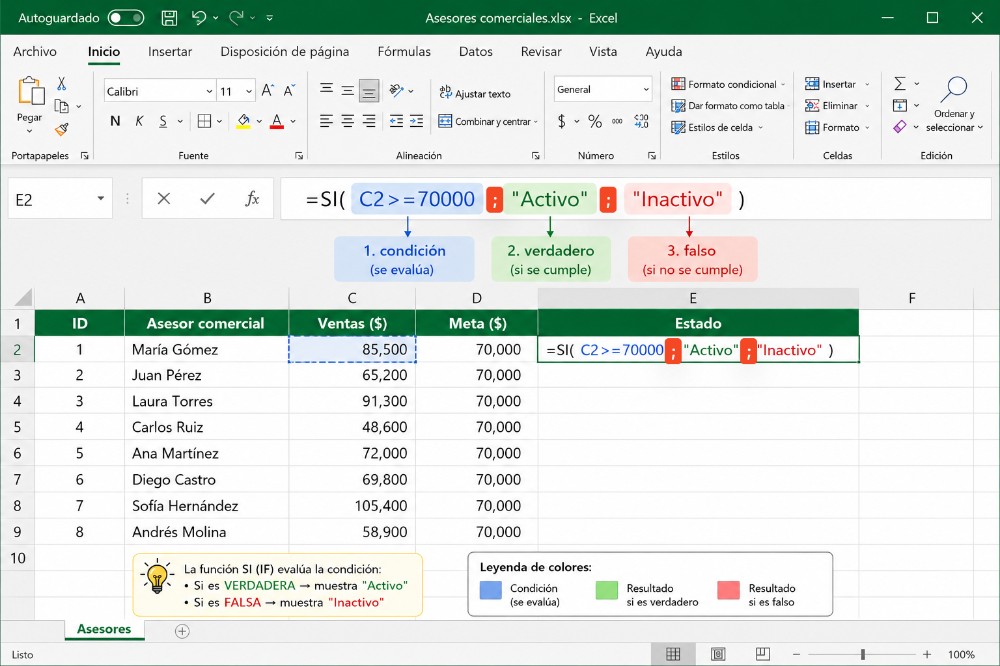

📋 El Memorando — Tu Misión esta Semana
Comunicado Interno · NeuroBiz S.A.S. · Gerencia Comercial
Para: Consultores Junior de Datos — Equipo TGA04
De: Gerencia Comercial, NeuroBiz S.A.S.
Asunto: Automatizar alertas de cumplimiento de meta de ventas
La Gerencia Comercial necesita que el sistema emita una alerta automática cuando el cumplimiento de meta de ventas de un asesor caiga por debajo del 70 %. Esta semana aprenderás a construir esa lógica usando la estructura condicional simple: SI … ENTONCES … FSI en pseudocódigo, =SI() en Excel y if en Python.
| LS_KEY | tga04_s3 |
| XP máximo | 60 XP |
| Pregunta central | ¿Qué hace el sistema cuando la condición es verdadera, y qué cuando es falsa? |
| Analogía guía | Semáforo: SI está en rojo ENTONCES detenerse FSI |
| Herramientas | 📊 Excel =SI() · 🐍 Python if · 📝 Pseudocódigo (referencia) |
📚 Marco Teórico
1. ¿Qué es una estructura condicional? 🟢 VIGENTE
La estructura SI-FSI (o if en Python) permite ejecutar instrucciones solo cuando una condición es verdadera. Si la condición resulta falsa, el algoritmo continúa sin ejecutar ese bloque. Es la base de toda automatización de decisiones en negocios.
2. La misma idea, tres herramientas 🟢 VIGENTE
El concepto de "si pasa X, haz Y" existe en todas las herramientas de análisis. La lógica no cambia; solo cambia cómo se escribe.
| Herramienta | Sintaxis | Uso típico en gestión |
|---|---|---|
| 📊 Excel | =SI(condición, valor_si_V, valor_si_F) |
Tableros, reportes, alertas automáticas en celdas |
| 🐍 Python | if condición: … else: … |
Automatización, análisis masivo de datos, dashboards |
| 📝 Pseudocódigo | SI condición ENTONCES … FSI |
Diseñar la lógica antes de escribir código (referencia) |
3. Diagrama de flujo del SI simple 🟢 VIGENTE
El rombo de decisión siempre tiene dos salidas: una para Sí y otra para No. En el SI simple, la rama verdadera ejecuta acciones; la rama falsa continúa sin hacer nada adicional.
| Elemento | Qué representa | Lectura correcta |
|---|---|---|
| Rombo | Pregunta lógica | ¿El cumplimiento es menor al 70 %? |
| Salida "Sí" | Bloque ENTONCES / if | Mostrar alerta en la celda / imprimir mensaje |
| Salida "No" | Continuación normal | No se muestra alerta; el asesor cumple |
4. Condiciones compuestas: Y / O (and / or) 🟢 VIGENTE
Cuando el negocio necesita verificar dos cosas al mismo tiempo, se combinan condiciones. Y / and exige que ambas sean verdaderas; O / or permite que una sola baste.
| Condición | Interpretación gerencial | Resultado esperado |
|---|---|---|
cumplimiento < 70 Y ventas_fallidas > 50 |
Alerta doble: bajo rendimiento y muchas fallas | Intervención urgente |
region = "Costa" O region = "Andina" |
Aplica para dos regiones | Basta una coincidencia |
5. Errores frecuentes al construir un SI 🟡 EVOLUCIONADO
| Error | Qué cree el estudiante | Corrección |
|---|---|---|
| Cerrar antes del bloque | Escribe el cierre antes de la acción | Primero condición → acción → cierre |
| Ignorar la rama "No" | Piensa que el rombo tiene una sola salida | Siempre etiquetar Sí / No |
| Confundir Y con O | Cree que basta una condición con Y | Y = ambas; O = al menos una |
| En Excel: olvidar separador | Escribe =SI(A1<70 "Alerta") | Usar punto y coma: =SI(A1<70;"Alerta";"") |
📊 Excel — Función =SI() aplicada a NeuroBiz
En gestión administrativa, Excel es la primera herramienta donde aparece la lógica condicional.
La función =SI() tiene exactamente la misma estructura que el pseudocódigo: condición, resultado verdadero, resultado falso.
=SI( prueba_lógica ; valor_si_verdadero ; valor_si_falso )En inglés:
=IF( logical_test, value_if_true, value_if_false )

Tabla de asesores NeuroBiz — Alerta de cumplimiento
Así luciría la hoja de trabajo en Excel. La columna F (Estado) se calcula automáticamente con =SI().
| A | B | C | D | E | F | |
|---|---|---|---|---|---|---|
| 1 | Asesor | Región | Ventas Logradas | Meta | Cumplimiento % | Estado =SI() |
| 2 | Carlos Mejía | Costa | 420 | 600 | =C2/D2*100 → 70.0 |
=SI(E2<70;"⚠️ ALERTA";"✅ Cumple") |
| 3 | Laura Torres | Andina | 310 | 500 | 62.0 | ⚠️ ALERTA |
| 4 | Miguel Pérez | Costa | 530 | 600 | 88.3 | ✅ Cumple |
| 5 | Sandra Ruiz | Pacífico | 290 | 450 | 64.4 | ⚠️ ALERTA |
| 6 | Jorge Díaz | Andina | 480 | 500 | 96.0 | ✅ Cumple |
Eso es exactamente lo que hace el algoritmo — no hay magia, solo una pregunta y dos respuestas posibles.
SI() anidado — Tres categorías de desempeño
Cuando necesitas más de dos resultados, puedes anidar un =SI() dentro de otro
(equivalente al SI-SINO-SI de la Semana 4). Por ahora, solo observa la lógica:
| E — Cumplimiento % | G — Categoría | |
|---|---|---|
| 1 | Cumplimiento % | Categoría de desempeño |
| 2 | 70.0 | ✅ Cumple |
| 3 | 62.0 | ⚠️ Alerta |
| 4 | 88.3 | 🏆 Excelente |
| 5 | 64.4 | ⚠️ Alerta |
| 6 | 96.0 | 🏆 Excelente |
Calculadora interactiva de la función =SI()
Simula lo que haría Excel con la fórmula de alerta. Cambia el porcentaje y observa el resultado.
Condición compuesta en Excel con Y() y O()
Excel también soporta condiciones múltiples dentro del =SI() usando las funciones =Y() y =O():
// Alerta doble: bajo cumplimiento Y muchas ventas fallidas =SI(Y(E2<70; F2>50); "🚨 CRÍTICO"; "OK") // Aplica para Costa O Andina =SI(O(B2="Costa"; B2="Andina"); "Región prioritaria"; "Otra región")
🐍 Python — if / elif / else aplicado a NeuroBiz
Python extiende lo que Excel hace en una celda: puede procesar toda la base de asesores de forma automática, generar reportes, enviar alertas masivas y conectarse a otras herramientas. La lógica es la misma; la escala es mayor.
• Python no usa
FSI para cerrar — el bloque se cierra con indentación (4 espacios).• Python usa
and / or en lugar de Y() / O().• Python usa
== para comparar igualdad (no = como en Excel).
⏳ Iniciando motor Python (Pyodide)…
📝 Referencia: Pseudocódigo Cairó (SI-FSI)
📝 Estructura general SI-FSI (Cairó) — ver referencia
SI condicion ENTONCES { instrucciones que solo ocurren si la condición es VERDADERA } FSI
FSI = "Fin Si" — indica dónde termina el bloque condicional.
En Python no existe FSI porque el cierre se marca con indentación (4 espacios).
📝 AlertaCumplimientoNeuroBiz — pseudocódigo completo
ALGORITMO AlertaCumplimientoNeuroBiz VARIABLES cumplimiento : REAL META_MINIMA : REAL nombre_asesor : CADENA INICIO META_MINIMA ← 70.0 ESCRIBIR "Nombre del asesor:" LEER nombre_asesor ESCRIBIR "Cumplimiento de meta (%):" LEER cumplimiento SI cumplimiento < META_MINIMA ENTONCES ESCRIBIR "⚠️ ALERTA: cumplimiento crítico" ESCRIBIR "Asesor: " + nombre_asesor ESCRIBIR "Actual: " + cumplimiento + "% / Meta: " + META_MINIMA + "%" FSI ESCRIBIR "Análisis completado." FIN
Prueba de escritorio
| Caso | Entrada | ¿Condición? | ¿Qué imprime? |
|---|---|---|---|
| Caso 1 | cumplimiento = 65.0 | Verdadera | Alerta + datos del asesor + "Análisis completado" |
| Caso 2 | cumplimiento = 82.0 | Falsa | Solo "Análisis completado" |
📝 AlertaDoble — condición compuesta Y
ALGORITMO AlertaDobleNeuroBiz VARIABLES cumplimiento : REAL ventas_fallidas : ENTERO INICIO ESCRIBIR "Cumplimiento de meta (%):" LEER cumplimiento ESCRIBIR "Ventas fallidas este mes:" LEER ventas_fallidas SI cumplimiento < 70.0 Y ventas_fallidas > 50 ENTONCES ESCRIBIR "🚨 ALERTA CRÍTICA: intervención urgente" FSI ESCRIBIR "Monitoreo completado." FIN
⚙️ Actividad Presencial
⏱️ Bloque 1 — Entender la estructura SI · Bloom: Comprender
- Revisar el memorando de la Gerencia Comercial y la tabla de KPIs.
- Dibujar en el tablero el rombo de decisión con sus dos salidas: Sí / No.
- Usar el ejemplo del semáforo y conectarlo con la alerta de cumplimiento de NeuroBiz.
- Mostrar en el proyector la tabla de Excel con la columna
=SI()y pedir a los estudiantes que lean la fórmula en voz alta.
⏱️ Bloque 2 — Excel en vivo · Bloom: Comprender → Aplicar
- Abrir Excel (o Google Sheets) y construir la tabla de asesores de NeuroBiz desde cero.
- Escribir juntos la fórmula
=SI(E2<70;"⚠️ ALERTA";"✅ Cumple")en la columna Estado. - Cambiar el valor de cumplimiento de un asesor y observar cómo cambia el resultado automáticamente.
- Proponer en grupo: ¿cómo cambiarías la fórmula para agregar una categoría "🏆 Excelente"?
⏱️ Bloque 3 — Misión NeuroBiz · Bloom: Aplicar
Responde cada pregunta y haz clic en Verificar para obtener retroalimentación inmediata.
1 +5 XP — Fórmula Excel
Escribe la fórmula =SI() para clasificar el cumplimiento de la celda E2 en: "Excelente" si ≥85, "Cumple" si ≥70, "Alerta" si es menor. (Pista: SI anidado)
2 +5 XP — Python básico
Escribe el bloque if en Python que imprima "⚠️ ALERTA" si cumplimiento < 70. Recuerda la indentación.
3 +5 XP — Condición compuesta
¿Cómo escribirías en Excel la condición "cumplimiento menor a 70 Y ventas fallidas mayor a 50"? Usa la función =Y().
4 +5 XP — Prueba de escritorio
Para el algoritmo de alerta simple, describe qué imprime el sistema con cumplimiento = 65 y qué imprime con cumplimiento = 82.
5 +5 XP — Reflexión aplicada
¿En qué situación real de tu carrera (gestión de personal, ventas, logística…) usarías una alerta condicional automática? Describe brevemente el caso.
🏠 HTI — Trabajo Independiente
Consolida la lógica condicional antes de pasar a SI-SINO (Semana 4).
📚 HTI-A — Lectura y observación
- Abre Google Sheets o Excel y replica la tabla de asesores NeuroBiz de esta semana.
- Agrega la columna
=SI()con la fórmula de alerta y verifica los resultados. - Dibuja en tu cuaderno el rombo de decisión con sus dos ramas y etiquétalas.
✏️ HTI-B — Nueva fórmula y nuevo caso
HTI-1 +4 XP
Escribe en Excel la fórmula =SI() que muestre "🎁 Descuento 15%" si el monto de compra en B2 supera $500.000, o "" (vacío) si no.
HTI-2 +4 XP
Escribe el equivalente en Python: if monto > 500000: print("Descuento 15%"). ¿Por qué no se necesita FSI?
HTI-3 +4 XP
¿Cuál es la diferencia entre usar =Y() y =O() en Excel? Da un ejemplo de negocio para cada una.
HTI-4 +4 XP
En la Celda 3 de Python (procesamiento masivo), ¿qué tendrías que cambiar para que el umbral de alerta sea 75% en lugar de 70%? ¿Y si quisieras agregar una cuarta categoría "🔴 Crítico" para menos del 50%?
🎮 Quiz Interactivo — Semana 3
5 preguntas · Haz clic en la opción correcta · 5 XP por acierto
1. En Excel, ¿cuál es la sintaxis correcta de la función condicional?
✅ Correcto. La función tiene tres argumentos separados por punto y coma: condición, resultado si verdadero, resultado si falso.
2. En Python, ¿cómo se cierra un bloque if?
✅ Correcto. Python usa la indentación para delimitar bloques, no palabras clave de cierre.
3. La condición compuesta =Y(E2<70; F2>50) es VERDADERA cuando:
✅ Correcto. =Y() exige que TODAS las condiciones sean verdaderas. Si una falla, el resultado es FALSO.
4. ¿Qué ventaja principal tiene Python sobre Excel para aplicar condicionales?
✅ Correcto. La diferencia de escala es la clave: Excel opera celda por celda; Python puede recorrer toda una tabla en segundos.
5. En un SI-FSI simple (sin SINO), ¿qué ocurre cuando la condición es FALSA?
✅ Correcto. En el SI simple no hay rama alternativa — el bloque ENTONCES solo corre cuando la condición es verdadera.
📖 Fuentes y Referencias
- Cairó Battistutti, O. & Guardati Bueno, S. (2022). Metodología de la programación (3ª ed.). Alfaomega. Sección de estructuras selectivas — base del pseudocódigo SI-FSI.
- Microsoft Support. Función SI en Excel — documentación oficial. Incluye sintaxis, ejemplos y SI anidado. support.microsoft.com
- Python Software Foundation. (2024). Python 3 Documentation — Control Flow. docs.python.org. Referencia de if / elif / else y operadores lógicos.
- Gartner. Estadística ampliamente citada: la automatización de alertas basadas en reglas reduce el tiempo de respuesta gerencial hasta un 40 %. Idea aplicada al caso NeuroBiz.
- Harvard CS50 Business Professionals. (2024). Casos de toma de decisiones automatizadas en entornos empresariales — referencia pedagógica del enfoque de la semana.
XP acumulados esta semana
0 / 60
4h presenciales + 5h trabajo independiente · Equivalencia: 9 horas